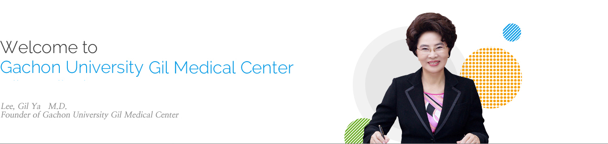

Founder’s Greeting

- Welcome to Gachon University Gil Medical Center
- Gachon University Gil Medical Center has never stopped facing challenges boldly, just like a pinwheel that spins even more when faced with strong winds. With future-oriented medicine insight, the medical center opened a west-coast emergency medical center. It has also made contributions to the development of basic medicine by establishing the Gachon University Neuroscience Research Institute and the Lee Gil Ya Cancer and Diabetes Institute. I am proud to introduce the operation of the first medical helicopter (air ambulance) service and the completion of Cancer Center, with the most advanced medical facilities and staff members of Gachon University Gil Medical Center. Thanks to all your efforts, Gachon University Gil medical Center was selected as one of the TOP 3 among 10 research-driven hospitals and made a grand achievement of being designated as the first regional trauma center in Korea.
- We take great pleasure in treating sick people beyond borders and we consider this as the most rewarding achievement of Gachon University Gil Medical Center. We will continuously carry on the fundamental spirit (loving neighbors, philanthropy, public service, and patriotism) that we have maintained and nurtured for more than half a century. We will do our best efforts to conduct the best research and to provide the best medical treatment. In addition, we will continue to engage in activities for social contribution through medical practice and grow in companionship with the local community. I am well aware that taking good care of patients and raising the level of healthcare is the most important thing for our future.
- I look forward to hearing your continuous support for Gachon University Gil Medical Center in which people can find a new hope. With continuous research, investment, and top-quality medical treatments, we will make our best efforts to become the most respectful and reliable hospital of the 21st century for all patients.